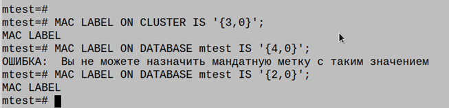
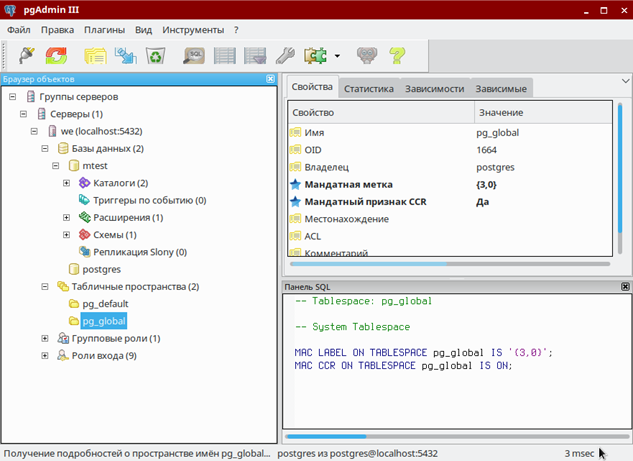
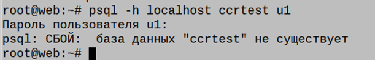
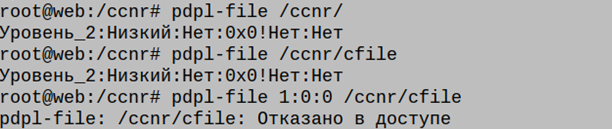

База данных Postgresql, входящая в состав Astra Linux SE, имеет свой собственный механизм обеспечения безопасности, в том числе, и мандатной. Этот механизм, конечно же, интегрирован в общую системы защиты ОС, но, как говорится в известном анекдоте, «Есть нюансы». Дело в том, что механизм МРД в базе, работая по правильной модели, реализован совсем по-другому. В postgresql.conf более 10 параметров, комбинация которых определяет, как будет вести себя база и работать МРД . А ведь еще есть ссылочная целостность между таблицами с разными атрибутами, есть вызываемые функции и триггеры, принадлежащие одним пользователям , обращающиеся к объектам других юзеров с разными метками и категориями!
Фразу «читайте документация» я пропускаю по причине, как говорят юристы, ничтожности. Только пытливый ум, коллегии, и традиционный бубен.
Немного похвастаюсь, что уже почти готов 3-х дневный курс «Advanced PostgreSQL для разработчика и безопасника» , одну главу выложу в нашей традиционной рублике. Поговорим про контейнерный признак CCR, который, казалось бы, так похож на признак CCNR в ОС!
В СУБД PostgreSQL ДП-модель накладывает ограничение на мандатную метку конфиденциальности объекта: метка объекта не может превышать метку контейнера, в котором он содержится

Согласно ДП-модели в части реализации мандатного управления доступом дополнительно к мандатной метке конфиденциальности вводится понятие объектов-контейнеров (объектов, которые могут содержать другие объекты). Для задания способа доступа к объектам внутри контейнеров используется мандатный признак CCR (Container Clearance Required). В случае когда он установлен, доступ к контейнеру и его содержимому определяется его мандатной меткой конфиденциальности, в противном случае доступ к содержимому разрешен без учета уровня конфиденциальности контейнера.
В качестве главного контейнера выбрано табличное пространство pg_global, которое создается одно на кластер базы данных. Таким образом, кластер является совокупностью ролей, баз данных и табличных пространств.
При создании мандатная метка объекта БД устанавливается равной текущей мандатной метке создавшего его пользователя, мандатный признак CCR при этом выставляется значение ON.
С одной стороны, метка CCR «обратно» аналогична метке CCNR в ОС, но есть некие отличие. Проведем исследование.
Для просмотра мандатного признака CCR кластера может быть использована следующая команда:
sudo -u postgres psql mtest
mtest=# SELECT cluster_macccr;
cluster_macccr
Таким образом мы видим, что метка выставлена по умолчанию
Задаем мандатный уровень для всего кластера БД:
MAC LABEL ON CLUSTER IS '{3,0}';
Что идентично:
MAC LABEL ON TABLESPACE pg_global IS '{3,0}';

Команда проходит без ошибок, не смотря что в контейнере, то есть, в БД, существуют объекты (хотя бы базы со схемами, созданные по умолчанию).
Важно! В ОС у нас аналогичная команда до снятым флагом CCNR на директории, была бы невозможна, так как в контейнере без флага CCNR могут находиться только объекты с равными мандатными атрибутами. Обратите внимание, что , даже создавая в папке файл от пользователя, вошедшего под 0-м уровнем, в директории без CCNR объекты автоматом получат уровень контейнера! (для этого пользователь должен быть, естественно, root, или обладать соответствующими parsec-привилегиями. Если в этой ситуации директория будет иметь флаг, то объекты создадутся с уровнем, соответствующим сессии пользователя.
Никакого нарушения модели тут нет, так обычный непривилегированный пользователь на меньшем уровне даже не увидит папку без флага CCNR, если ее уровень больше:
Создадим в кластере (наш контейнер) объект – базу данных.
postgres=# CREATE DATABASE ccrtest;
CREATE DATABASE
Посмотрим ее maclabel,- он будет равен «0»
Дадим ей уровни конфиденциальности:
sudo -u postgres psql ccrtest;
ccrtest=# MAC LABEL ON DATABASE ccrtest IS '{3,0}';
MAC LABEL
ccrtest=# MAC LABEL ON DATABASE ccrtest IS '{2,0}';
MAC LABEL
Важно! Изменять ССR для базы можно только будучи подсоединенным к этой базе!
Как видите, мы можем понижать в контейнере уровень объектов.
Теперь изменим метку CCR контейнера (кластера):
ccrtest=# MAC CCR ON CLUSTER IS ON;
MAC CCR
ccrtest=#
Операция прошла без ошибок! Там в чем же разница, если мы можем создавать объекты меньшего уровня и с меткой, и без?
Смотрим определение CCR из документации:
«В случае когда CCR установлен, доступ к контейнеру и его содержимому определяется его мандатной меткой конфиденциальности, в противном случае доступ к содержимому разрешен без учета уровня конфиденциальности контейнера».
Посмотрим на примере, что это значит:
Наша свежесозданная база данных ccrtest имеет мандатный атрибут «3» и установленный по умолчанию флаг CCR:
MAC LABEL ON DATABASE ccrtest IS '{3,0}';
MAC CCR ON DATABASE ccrtest ccrtest IS ON;
Создадим непривилегированного пользователя c именем как и у пользователя ОС, имеющего нулевой уровень:
CREATE USER u0 WITH password 'qwerty';
И пытаемся залогиниться к базе:
root@web:~# psql -h localhost ccrtest u1
Пароль пользователя u1:
psql: СБОЙ: база данных "ccrtest" не существует
Ошибка! Пользователь меньшими атрибутами не может войти в БД (таблицу, и т д, если установлен флаг CCR). Снимем его с базы данных и проверим возможность подключения:
MAC CCR ON DATABASE ccrtest IS off;
root@web:~# psql -h localhost ccrtest u1
Пароль пользователя u1:
psql: СБОЙ: permission denied for cluster, insufficient MAC attributes
Опять возникает ошибка, но по другой причине – у вышестоящего объекта (кластера) мы флаг оставили. Убираем флаг с кластера и пытаемся войти еще раз и видим, что аутентификация прошла успешно:
ccrtest=# MAC CCR ON CLUSTER IS off;
root@web:~# psql -h localhost ccrtest u1
Пароль пользователя u1:
psql (9.6.10)SSL-соединение (протокол: TLSv1.2, шифр: ECDHE-RSA-AES256-GCM-SHA384, бит: 256, сжат
Введите "help", чтобы получить справку.

Для вывода информации о соблюдении ДП-модели между объектами-контейнерами и находящимися в них объектами реализована SQL-функция check_mac_integrity, которая выводит информацию в следующем виде:
– objid — Идентификатор объекта;
– classid — Идентификатор класса объекта;
– cobjid — Идентификатор контейнера, содержащего объект;
– cclassid — Идентификатор класса контейнера, содержащего объект;
– status — Результат проверки. Может принимать следующие значения: OK(модель соблюдается для объекта и контейнера) и FAIL(модель не соблюдается для объекта и контейнера).
